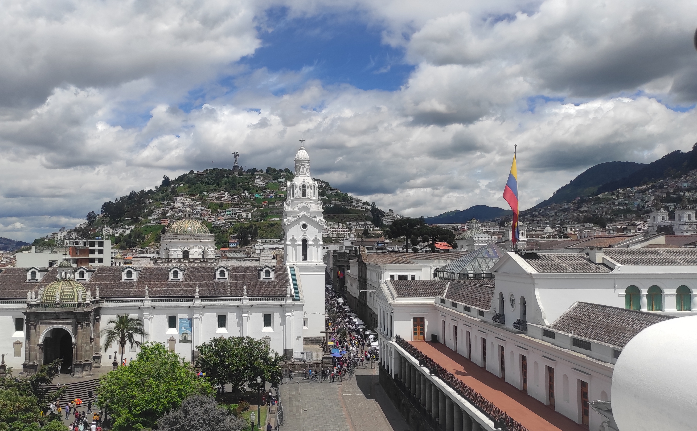

"Antecedentes penales" are the two words that made rush me through Ecuador because without that piece of paper the only visa they could give me was a 10 days visa. So there was my challenge. North to south, about 1000km in only ten days, hard but doable. I took it as a challenge and I decided to built my itinerary from there. I opted for four stops Ibarra (with a quick lunch on my way to Quito in Otavalo where the street market on friday is a colorful masterpiece, go for hornado, you won't be wrong), Quito, Cuenca and Vilcabamba.
In Ibarra I stayed in a small location outside the city called la Esperanza, because I wanted to visit Emerson and stay at his place, since I had that place recommended from a friend. The town is surrounded by vulcanos and so it is the whole country and during my time there I did nothing but walking up to those beautiful lagunas that used to be vulcanos in fact, while the neblina was surrounding me and making my hike slightly chiller. A special mention goes to a place called Casa Aida, a place that according to the legend has seen coming in celebrities like Bob Dylan, the Floyd and Manu Chao. Dona Aida is still up there in a great shape, always willing to help you whatever thing you might need before your hike and the place it is certainly a must-seen for its great past.

Quito so far for me is one of the most beautiful cities of Latin America. The city lies in the middle of the mountain with its great rooftops, its colonial historical center and a church that looks like Notre-Dame de Paris. I wasn't there for long unfortunately (10 days...remember?), but I had the chance to go visit the monument who was made on the equator line in a place called Midad del Mundo and take a cable cab up to cerro Pichincha (4776 mt. above sea level) with a splendid travel companion like Joelle.

Since for me mostly Cuenca was work and routinary days, I go straight to Vilcabamba with my tale, a closing bracket before moving to Perú and finally being able to chill a bit more. Vilcabamba is a nice little town, where I could do even more hikes (this time the goal was cerro Mandango) and attending a street festival the night before leaving. In this city there seem to be a little more of a european presence (french in particularly) and so I treated myself with a nice little french breakfast with french croissants that I haven't done in a while.